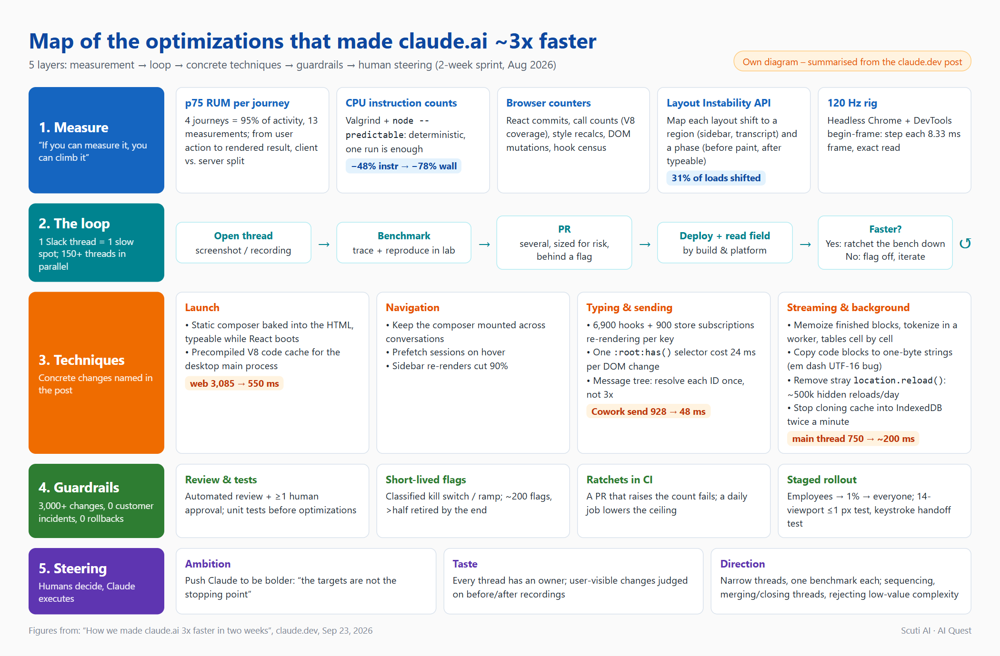
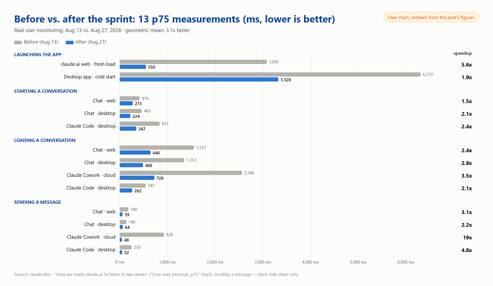
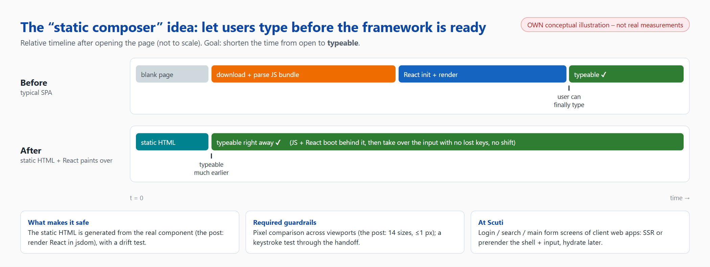
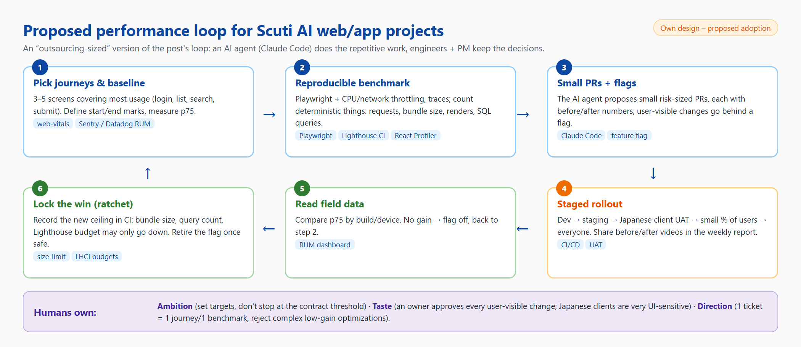

1. TL;DR & key numbers
In August 2026 the team behind claude.ai and the Claude desktop app ran a two-week sprint to answer a simple user complaint: “it's slow”. The core journeys ended up roughly 3x faster. The interesting part is not a single trick but how the work was organized: Claude (via Claude Tag beta, running an internal research model roughly comparable to Opus 5.5) found bottlenecks, built benchmarks, sent PRs and watched deploys; engineers set goals, weighed tradeoffs and approved every change.

2. Context: one sprint, one Slack channel, Claude in every thread
Before the sprint the team opened a Slack channel and gave Claude a standing “job description”: watch deploys for performance regressions, judge whether existing telemetry is accurate and complete, keep observability dashboards curated, proactively fix low-hanging fruit, propose performance projects and talk to its human teammates. They were explicit that full autonomy was the long-term goal, but not yet possible.
Step one was choosing what to measure. Claude analysed usage data through the Datadog MCP server and identified four journeys covering about 95% of activity: launching the app, starting a conversation, loading an existing conversation and sending a message. Across web/desktop and products (Chat, Claude Code, Cowork) that gave 13 measurements. The team added instrumentation until all of them were comparable: start at a user interaction, end when the result is rendered, and separate client from server work.

The sprint started with about twenty hand-picked projects; Claude estimated each one's impact in milliseconds and the team summed them into targets. Then the surprise: 12 of 13 targets were hit by day three. So they set new targets and asked Claude to find more things to measure – “wacky ideas” welcome.

3. Strategy 1 – Measure first: “anything you can count, you can climb”
The problem: field data only arrives after each deploy, while Claude can work for hours, even overnight. To iterate faster than the deploy cadence the team needed lab measurements that run immediately. Wall-clock time is what users feel but it is too noisy to gate CI, so they looked for deterministic quantities:
- CPU instruction counts for pure-JavaScript hot paths: run the benchmark under Valgrind with
node --predictableand compare to a checked-in baseline – one run, no statistics. - In the browser (no instruction counting under Chromium): React commits per interaction, function call counts from V8 precise coverage, layout/style-recalc counts, DOM mutations.
Each benchmark had two jobs: (1) a number Claude could push down in the lab, and (2) a CI guardrail that can only ratchet down. Flaky benchmarks, or ones that did not correlate with real latency, were thrown out so Claude would not climb the wrong hill. Claude also had to prove that lower counts meant lower wall-clock time.

Concretely: profiling the conversation message-tree assembly showed a quarter of the instructions were megamorphic dictionary lookups, resolving the same message ID three times. It now resolves it once; the status-line scanner got a cheap first-character check before the regex. Two ratchets were then checked in: any PR raising those counts fails CI, and a daily job lowers the ceiling whenever the count drops.
4. Strategy 2 – A loop per thread
Everything happened in one Slack channel, with several engineers and Claude in every thread. Each thread followed the same loop:
Someone opens a thread about a slow stretch, usually with a screenshot or screen recording.
Claude traces the flow and finds or builds a benchmark that reproduces it.
With a promising lab result it sends PRs – often several small ones sized for risk and review; anything user-visible goes behind a feature flag.
After shipping, Claude watches the deploy and reads field data.
Faster → lock in the win by ratcheting the benchmark down. Not faster → turn the flag off and iterate.
Move on to the next slow spot in the same journey.

Example: sidebar jank no monitor could see
A recording showed sidebar rows popping in after load. CLS missed it: each shift scored about 0.008, far below the 0.1 “good” threshold. The team went to the underlying Layout Instability API: Claude built a telemetry event mapping every shift to a region (sidebar, transcript…) and a phase (before first paint, after typeable), plus an integration test that deliberately delays sidebar data until after first paint and fails on any shift. Red 20/20 on main, green 20/20 on the fix.
Once deployed, field data showed 31% of web loads moved something after the page was usable. Claude fixed the top causes in batches (a late header row, a caret sliding once the user's name loaded, a list moving when the scrollbar appeared…), then went for the next batch.
5. Strategy 3 – The concrete technical optimizations
Once the loop worked for one thread, scaling meant opening more threads – at times more than 150 at once, a single thread producing 50–100 PRs, and increasingly Claude itself opening threads from its own findings. Here are the specific changes named in the post, grouped by journey:
| Area | Problem / technique | Why it matters |
|---|---|---|
| Launch | Static composer: the input box is baked into the HTML; React boots behind it and paints on top | Users can type before the framework is ready |
| Desktop launch | Precompiled V8 code cache for the desktop shell's main process | No recompiling JS from scratch at every start |
| Navigation | Composer stays mounted between conversations; prefetch sessions on hover; sidebar re-renders cut by 90% | Switching conversations feels instant |
| Typing | A React “hook census”: 6,900 hooks and 900 store subscriptions on the composer's typing path, re-rendering per keystroke | Remove redundant subscriptions on the hot path |
| CSS | A single :root:has() selector added 24 ms of style recalculation to every DOM change | One CSS line can be a bottleneck |
| Hidden reloads | A leftover location.reload() caused about 500,000 hidden reloads a day, invisible to every load metric | Trace what happens after first paint too |
| Idle tabs | Identical cache snapshots cloned into IndexedDB twice a minute, on the main thread | Profile tabs that are “doing nothing” |
| Syntax highlighting | One em dash or curly quote makes V8 store the whole string as UTF-16, so every highlighting regex takes the slower two-byte path. A 20-line fix copies each code block into a one-byte string first | First code block: main-thread blocking 1.0 s → 0.35 s |
| Streaming | Memoize finished blocks (no more O(message length) work per chunk), move code-fence tokenization to a worker, reveal tables cell by cell | Total main-thread blocking ~750 ms → ~200 ms |

Two side effects stand out: about a third of PRs added telemetry or guardrails, and every new instrument spawned more threads; and because the work was public in one channel, other teams started bringing their own changes in for performance review.
6. Strategy 4 – Guardrails: moving fast without breaking things
Almost everything touched was a hot path (first paint, the composer, the transcript), so the safety mechanisms were set up before speeding up:
- Every PR went through automated review plus at least one human approval; unit tests always came before optimizations.
- Anything that could cause a user-visible problem shipped behind a short-lived feature flag. Claude classified each flag as kill switch or ramp and retired it as soon as it was safe: nearly 200 flags, more than half already removed by the end.
- Ratchets lock wins into CI, because performance decays in a fast-moving codebase.
- Incremental rollouts: employees first, then 1% of users, then everyone.
The static composer is “brittle by design” (off by one pixel and the illusion breaks), so it got dozens of guardrails: the static markup is generated by rendering the real React component in jsdom, with a no-drift test; an integration suite compares static and React renders at 14 viewport sizes within 1 px; a keystroke test types through the handoff and fails on lost or reordered keys; in the field each handoff reports shifts to a tenth of a pixel and Claude opens a thread for any nonzero event.

A bug that “wasn't ours”: Chrome prerendering
Four hours after the static composer went out internally, a teammate shared a recording: opening claude.ai in a new tab occasionally dropped the composer by ~10 px. Claude worked it out from the video: on organization-managed browsers Chrome's new-tab page has a 56 px footer; Chrome prerenders the page while the URL is typed, at that shorter height, and resizes ~0.1 s after first paint. The composer sits at 18% of page height, so it drops 0.18 × 56 ≈ 10 px – matching the video. The bug was always latent; it only showed because the page now painted earlier. Fix: pin the layout across the resize and add a test that simulates the prerender flow.
7. Strategy 5 – Human steering: ambition, taste, direction
The loop was productive but not autonomous. The team describes the human role in three parts:
| Role | In the post |
|---|---|
| Ambition | By default Claude is careful: it files tickets, hedges on feasibility, pads estimates. Trusting their guardrails, engineers kept pushing it to be bolder (“please be braver”) and reminding it that targets are not the stopping point. |
| Taste | Each thread had a named human owner. User-perceptible changes came with before/after screenshots or recordings for the owner to rule on: cell-by-cell or row-by-row tables? skeleton now or after half a second? is a word-by-word fade worth a fifth of the frame budget? |
| Direction | Threads were deliberately narrow: one benchmark or journey. Humans decided sequencing, merged overlapping threads and closed ones with diminishing returns. A 900-line PR was rejected because 2 ms per send was not worth maintaining a build plugin. |
8. Case study: an 8-millisecond frame budget
One sidequest shows all the pieces together. While demoing a regex optimization for live syntax highlighting, Claude attached a recording of a long reply streaming, with an FPS readout computed from animation-frame timestamps. An engineer asked: can we reach 120 fps? The browser in the measurement rig ticks at 60 Hz by default, but Claude used DevTools begin-frame control for deterministic 120 Hz frame stepping (exactly 240 frames for 240 begin-frames at 8.33 ms), turning “did this frame fit the budget?” into an exact read instead of a noisy one.
Claude then stepped through a long reply frame by frame: memoizing finished blocks, moving tokenization to a worker, revealing tables cell by cell. That thread alone landed nearly 60 PRs. Long replies now block the main thread ~200 ms in total instead of ~750 ms, use about a third of the CPU and hold 120 fps start to finish on a 120 Hz MacBook; the 120 Hz rig became a nightly regression job.
The post ends with what's left: p95, other journeys and very long conversations; some fixes went upstream (Electron, Chromium, Node.js) and will get their own post.
9. Personal takeaways
- The real bottleneck is missing measurements, not missing ideas. Most bugs in the post (hidden reloads, the
:has()selector, the UTF-16 em dash) nobody would have guessed; they only surfaced once there was a concrete number to look at. - Deterministic metrics for CI, wall-clock for users. Counting instructions, renders or requests is far more stable than milliseconds – but prove the correlation with real time before trusting it.
- Ratchets are the cheapest way to keep a win. An unlocked optimization erodes within a few sprints. “Can only go down” thresholds make performance a protected property, not a campaign.
- Speed comes from safety. 3,000 changes without a rollback came from tests-first, flags and staged rollouts – guardrails do not slow you down, they let you go fast.
- AI agents need permission to be ambitious, and humans to keep the taste. The agent defaults to caution; people decide what is worth doing (a 900-line PR for 2 ms is not).
- A “good” CLS can still be a bad experience. Aggregate metrics have thresholds; users don't. Sometimes you need the raw API (Layout Instability) to see the problem.
10. Applying it to projects & daily operations at Scuti AI
Scuti AI builds outsourced web/apps for Japanese clients: no millions of users or dedicated performance team like Anthropic, but the core ideas scale down well. Here is the version I propose:

10.1. In client projects
| Technique in the post | How to apply it at Scuti |
|---|---|
| 4 journeys = 95% of activity | At proposal/kickoff, agree with the Japanese client on the 3–5 most important screens (login, list, search, sign-up…) and write p75 targets into the non-functional requirements (非機能要件). |
| Lab benchmarks + deterministic metrics | An E2E benchmark script per journey with CPU/network throttling; in CI, count stable things: requests, JS bundle size, SQL queries per API (catch N+1), re-renders (React Profiler). |
| Ratchets in CI | size-limit / Lighthouse CI budgets / query-count tests: a PR that increases them fails; when they drop, commit the new ceiling. |
| Static composer | For first screens (login, search), SSR/prerender the shell and the input so users can act early; add screenshot-comparison and keystroke-through-hydration tests. |
| Prefetch on hover, keep components mounted | List → detail flows (Next.js prefetch, React Query prefetchQuery on hover). |
| Layout Instability by region | Send layout-shift entries tagged with region names to Sentry/Datadog; Japanese clients are very sensitive to “jumpy” UI, so this is a visible quality win. |
| Flags + staged rollout | Dev → staging → client UAT → a share of users → everyone; each flag records its type (kill switch/ramp) and removal date. |
| Before/after recordings for the people with “taste” | Attach before/after videos to the weekly report (週次報告): easier than tables of numbers and speeds up client approval of UI changes. |
10.2. In daily operations
- One shared performance channel (Slack/Teams) per project: whoever sees slowness opens a thread with a recording; one thread = one narrow problem with an owner.
- Give Claude Code the repetitive work: reading traces, writing benchmarks, proposing small PRs with before/after numbers. Engineers review and decide whether to merge – the AI never merges by itself.
- Tests before optimizations – a mandatory review rule, as in the post.
- Set targets as numbers instead of “make it faster”; once hit, ask “what else can we measure?”.
- Clean up flags regularly (e.g. at the end of every sprint) to avoid tech debt.
10.3. A minimal guardrail you can use today
11. Demo video & how this blog was made
The video below walks through the reading and synthesis process: opening the original post, reading through its key parts, reviewing the self-made diagrams, and ending on this blog scrolled top to bottom.
12. References
- How we made claude.ai 3x faster in two weeks – claude.dev Blog (Raymond Wang, Sam Attard, Issac G., Sep 23, 2026)
- MDN – LayoutShift (Layout Instability API)
- web-vitals (GoogleChrome)
- size-limit
All figures in sections 1–8 come from the original post. The diagrams and proposals in sections 9–10 are the blog author's own.